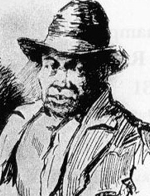

|

|

|
|
|
Born a slave in Southampton County, Virginia, on October 2, 1800, Nat
Turner eventually led the most famous slave rebellion in American
history, in which 65 people lost their lives. As a slave, Turner worked
the fields, planting and harvesting cotton and tobacco. A deeply
religious and mystical man, Turner preached to other slaves on Sundays
and was believed by some to be a prophet.
In 1821, Turner ran away from the plantation of his master, but
returned because a vision from God insisted that he complete his work
for his "earthly master." In 1822 Nat's owner, Samuel Turner, died and
Nat was sold to Thomas Moore. Turner moved again in 1830 when Moore's
widow remarried and took her slaves to the home of her new husband,
Joseph Travis. By this time, Turner had experienced two more mystic
visions.
Due to these, Turner became convinced that God wanted him to lead a
revolt against slavery. This belief was reinforced by an eclipse in
February, which Turner thought was a divine signal. Turner selected July
4, 1831 as the day of the rebellion but became sick the day before and
had to postpone it. On August 13th a second sign, a bluish green sheen
on the sun, appeared. His intentions renewed, Turner met with four other
men and scheduled the uprising for the early morning of August 22nd.
On that day, Turner and his four companions met in the woods around 2
a.m. and walked to the Travis plantation, killing Joseph Travis, the
former Mrs. Moore, and Putnam Moore, her son and Turner's legal owner.
Next they moved through Southampton County, from one plantation to
another, for forty hours. Everywhere they went, they killed all the
white people they could find. Between forty and eighty slaves joined the
rebellion, and by its end about 55 people had been killed.
Military and local forces were mustered to seek the rebels and to
protect the population, and after a failed confrontation with militia
near Jerusalem, Virginia, Turner's forces scattered and Turner himself
sought refuge in a cave. Still in Southampton County, he was located,
captured and imprisoned by Benjamin Phipps on October 30, 1831. While
awaiting trial, Turner spoke at length with Dr. Thomas R. Gray, who
transcribed what was later published as Turner's "Confession." Tried on
November 5th, Turner was convicted and sentenced to death by hanging. On
November 11th, the sentence was carried out, after which Turner's body
was skinned.
It is unclear whether the Turner rebellion inspired other slave
actions, but Southern whites were in no mood to take risks. In Virginia,
55 slaves were executed, more were expelled from the state, and a number
were killed by mobs of enraged whites. The legislature of Virginia
shelved their debate over abolition and instead instituted new rules
intended to control all African American people, slave and free, with
much greater severity and repression.
Source: Malcolm Rohrbrough, ed. Facts on File Encyclopedia of American
History: Expansion and Reform, 1815 to 1855 (New York: Facts on
File, 2003), 346-48.
|